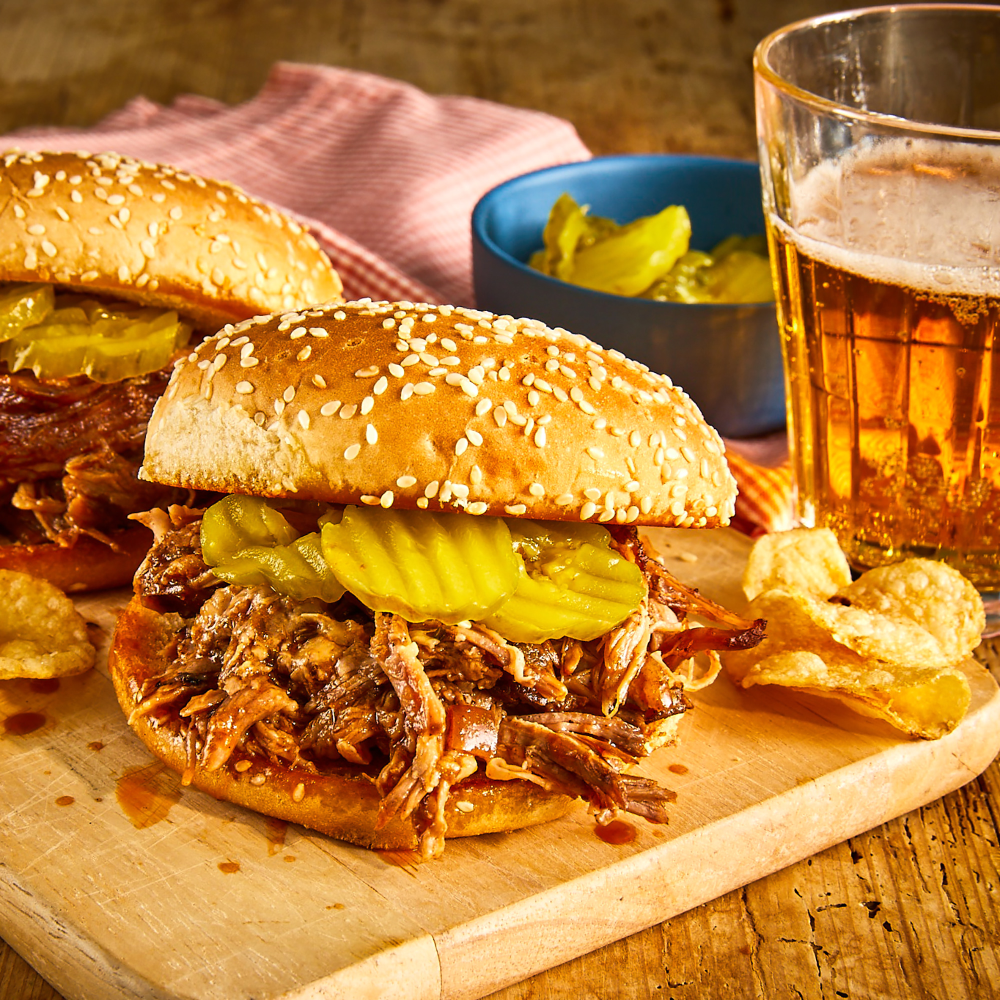

Slow Cooker Texas Pulled Pork

A traditional slow cooked pulled pork recipe, served on a toasted roll topped with
fresh slaw and pickles.
Ingredients
- 1 teaspoon vegetable oil
- 1 (4 lb.) pork shoulder
- 1 cup barbecue sauce
- 1/2 cup apple cider vinegar
- 1/2 cup chicken broth
- 1/4 cup light brown sugar
- 1 tablespoon yellow mustard
- 1 tablespoon Worcestershire sauce
- 1 tablespoon chili powder
- 1 onion
- 2 cloves garlic
- 1 1/2 teaspoons dried thyme
- 8 hamburger buns
- 2 tablespoons butter
Steps
Step 1
Pour the vegetable oil into the bottom of a slow cooker. Place the pork roast into
the slow cooker; pour in the barbecue sauce, apple cider vinegar, and chicken broth.
Stir in the brown sugar, yellow mustard, Worcestershire sauce, chili powder, onion,
garlic, and thyme. Cover and cook on High until the roast shreds easily with a fork,
5 to 6 hours.Step 2
Remove the roast from the slow cooker, and shred the meat using two forks. Return
the shredded pork to the slow cooker, and stir the meat into the juices.Step 3
Spread the inside of both halves of hamburger buns with butter. Toast the buns,
butter side down, in a skillet over medium heat until golden brown. Spoon pork into
the toasted buns.